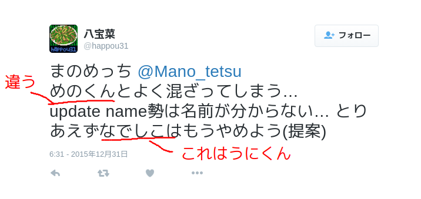
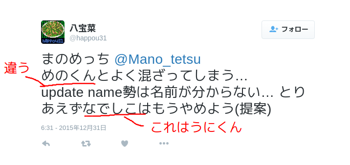
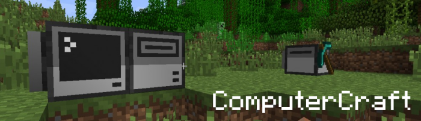
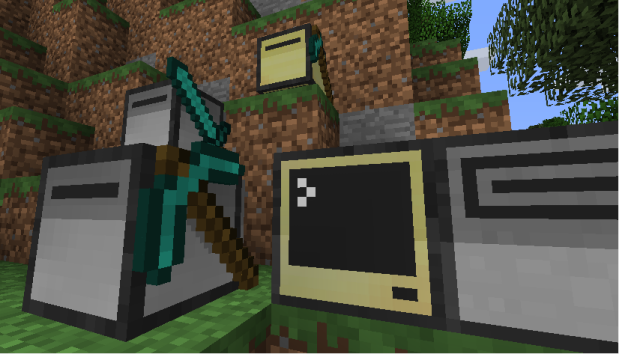
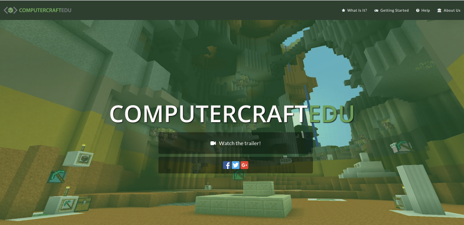

- まのめっち
- 13RD
- 作曲もやってるよ
まのめっち


GUIもつくれる
これらを組み合わせてゲームも作れちゃう！

タートル(turtle)・コンピュータ・ディスクドライブ
言語はlua
ただひたすら高さ2でまっすぐ掘るだけのプログラム
function mine(length)
-- 掘って
for i = 1, length do
turtle.dig() -- 正面を掘る
turtle.forward() -- 正面に進む
turtle.digUp() -- 真上を掘る
end
-- 戻ってくる
turtle.turnRight() -- 右に90°回る
turtle.turnRight() -- もう一回
for i = 1, length do
turtle.forward()
end
-- アイテムをドロップする
for i = 0, 16 do -- スロットが16あるので16回ループ
turtle.select(i) -- スロット選択
turtle.drop() -- アイテムをポイする
end
turtle.turnRight() -- 元の方向に
turtle.turnRight() -- 戻す
end
args = {...} -- 引数を入れる
mine(args[1]) -- 実行

And especially these people:
Twitter Mano_tetsu
github asatake